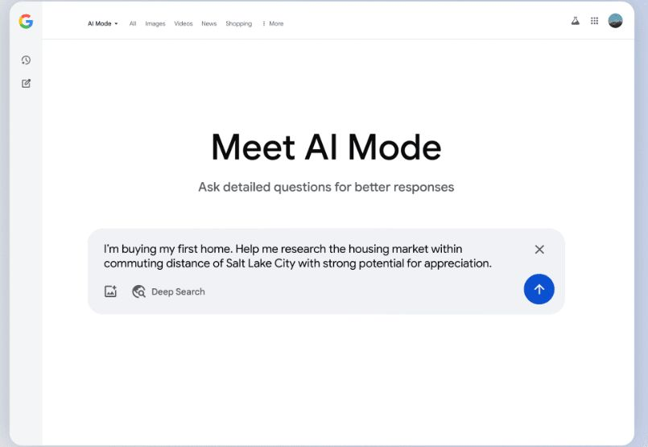

האם בקרוב בוטים ידברו בשבילך? והאם בצד השני של הקו יחכה להם... בוט אחר?
פורסם במקור ב LinkedIn
האם בקרוב בוטים ידברו בשבילך? והאם בצד השני של הקו יחכה להם... בוט אחר?
גוגל הכריזה השבוע על השקה כללית של הכלי החדש שלה - Agentic AI לשיחות טלפון - לכל המשתמשים בארצות הברית.
מעכשיו, לא צריך יותר להרים טלפון למספרה, למרפאת השיניים או לחנות כלי העבודה: פשוט מחפשים בגוגל, והמערכת תתקשר בעצמה, תשאל שאלות כמו זמינות, שעות פתיחה ומחירים - ותחזור אליך עם תשובות. בלי שהיית צריך לדבר עם אף אחד.
מהצד השני, לא רחוק היום שבו גם העסק שאליו תתקשר הבינה המלאכותית לא ינוהל על ידי אדם, אלא על ידי סוכן AI משלו. מערכת אוטונומית שתענה לשיחה, תבצע את הסינון, תשלוף את הנתונים הרלוונטיים - ותשיב.
זה לא רק פתרון נוח לשירות לקוחות.
מדובר בצעד נוסף, מעשי מאוד, לעבר עידן שבו אינטראקציות בין-עסקיות ואפילו בין-אישיות מתווכות כמעט כולן על ידי סוכנים אוטונומיים.
במקביל לשיחות, גוגל משיקה גם Deep Search - כלי חדש שחוקר נושאים מורכבים על בסיס מאות שאילתות, ומחזיר סיכום מסודר עם מקורות. ושדרוגים למודלים החזקים שלה, כולל הוספת Gemini 2.5 Pro למנויים בתשלום.
כל אלו מאותתים על מגמה עמוקה:
המעבר ממנוע חיפוש - לסוכן פעולה. מממשק מידע - למערכת שמנהלת מטלות במקומך.
אבל השאלה המתבקשת היא לא רק איך תגיב ChatGPT או מה תעשה Perplexity. אלא מה יקרה כשההרגל לדבר עם אדם יפוג?
מה יישאר מהשיחה כשהיא תתבצע בין מודלים בלבד?
